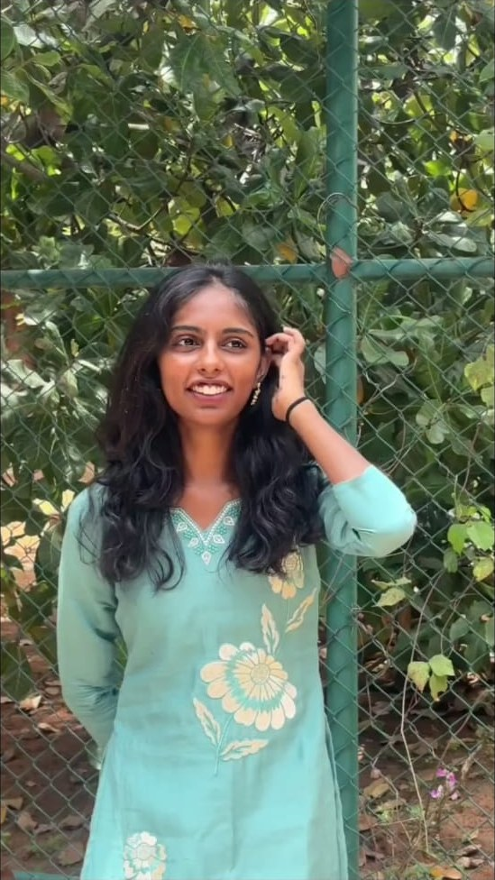
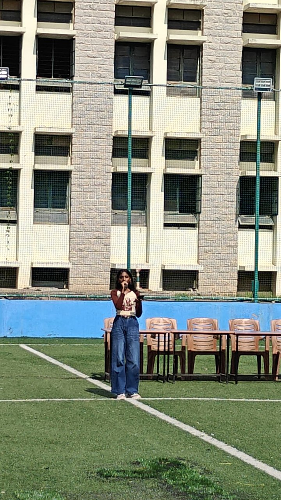
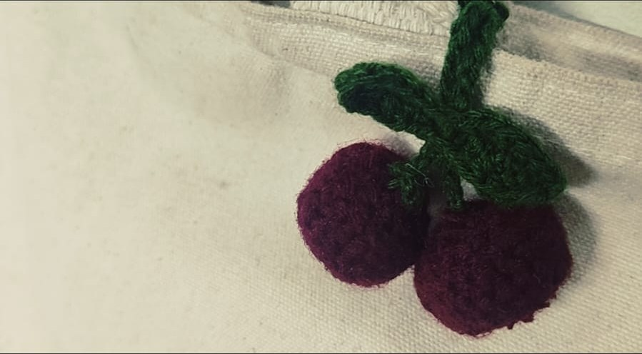

</>Pro - Jet
Pro-jet is a website built for students, it is an intelligent carrer guidance platform that helps students identify right skills, projects, and learning based on their current knowledge and carrer goals.
✳ A little corner of the internet
Computer Science Engineering student · Bengaluru, India
Learning by making, finding rhythm in the everyday, and collecting little ideas along the way.

made of curiosity ✿ currently growingI’m a third-year Computer Science Engineering student at T John Institute of Technology, Bengaluru, with a CGPA of 8.79. I enjoy building programs and web pages, untangling coding problems on LeetCode, and learning new technologies.
Outside class, you’ll find me listening to music, dancing, writing poems, or crocheting. I’m a clear communicator who enjoys taking the lead when it helps a team move forward. I’m looking for opportunities to learn, grow, and contribute to real projects.
T John Institute of Technology · Bengaluru
3rd yearCGPA 8.79RNS
91%SSVN School
88.32%</>Pro-jet is a website built for students, it is an intelligent carrer guidance platform that helps students identify right skills, projects, and learning based on their current knowledge and carrer goals.
A song for the commute, a playlist for the mood, music for just about everything.
My favourite way to shake off the day and find a little more joy in it.

Little words for the things that are sometimes hard to say out loud.
Tiny cherries, stitched loop by loop. Crochet is my slow, quiet way of making something with my hands.

Have a project or an idea?
If you’re working on something interesting, have an opportunity to share, or just want to say hello, I’d love to hear from you.
kousalyacs02@gmail.com ↗